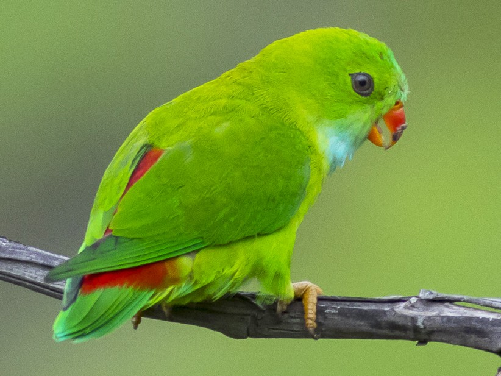

Parrots, also known as psittacines are birds of the roughly 398 species in 92 genera comprising the order Psittaciformes found mostly in tropical and subtropical regions. The order is subdivided into three superfamilies: the Psittacoidea ("true" parrots), the Cacatuoidea (cockatoos), and the Strigopoidea (New Zealand parrots). One-third of all parrot species are threatened by extinction, with higher aggregate extinction risk (IUCN Red List Index) than any other comparable bird group. Parrots have a generally pantropical distribution with several species inhabiting temperate regions in the Southern Hemisphere, as well. The greatest diversity of parrots is in South America and Australasia.Characteristic features of parrots include a strong, curved bill, an upright stance, strong legs, and clawed zygodactyl feet. Many parrots are vividly coloured, and some are multi-coloured. Most parrots exhibit little or no sexual dimorphism in the visual spectrum. They form the most variably sized bird order in terms of length.
